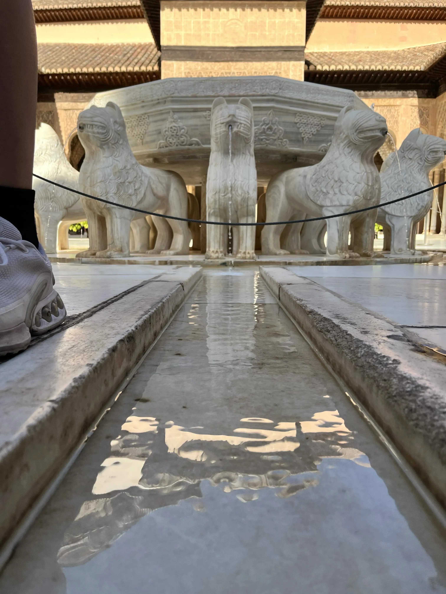
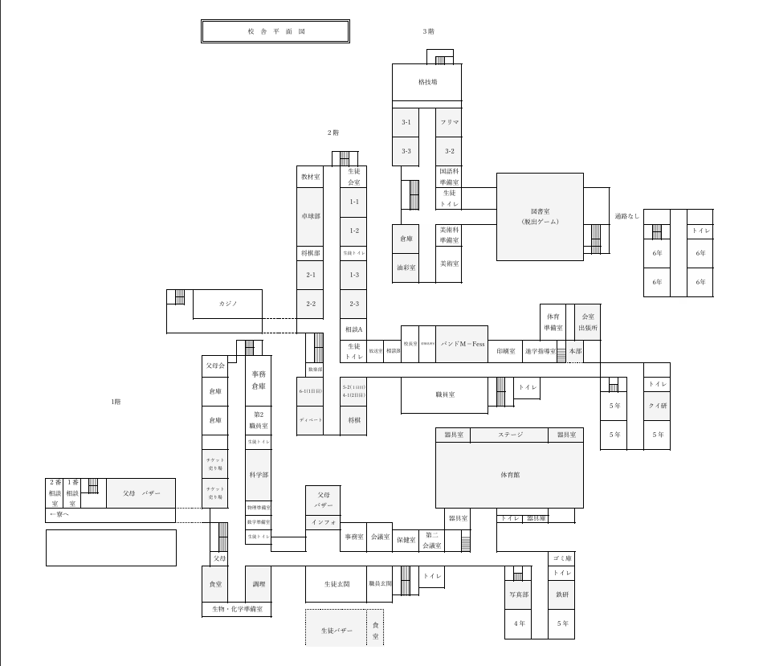

北嶺祭は北嶺中・高等学校最大の学校行事です。 展示や発表、体育館企画、バザーなどを通して、 北嶺生が日頃の成果を発信します。
「Cherish」には、 仲間と過ごす時間、 支えてくれる人々、 文化祭で生まれる思い出を 大切にしてほしいという願いが 込められています。 北嶺祭2027が、 一人ひとりにとって特別な思い出となることを目指しています。
| 時間 | 内容 |
|---|---|
| 09:00 | 開場 |
| 09:30 | 一般公開開始 |
| 10:00 | 中学生展示・高校生バザー開始 |
| 13:00 | 体育館企画 |
| 16:00 | 終了 |
| 時間 | 内容 |
|---|---|
| 09:00 | 一般公開開始 |
| 10:00 | 中学生展示・高校生バザー開始 |
| 13:00 | 体育館企画 |
| 15:00 | 閉会式 |
| 16:00 | 終了 |

校内マップです。各企画の場所は当日配布されるパンフレットも併せてご確認ください。